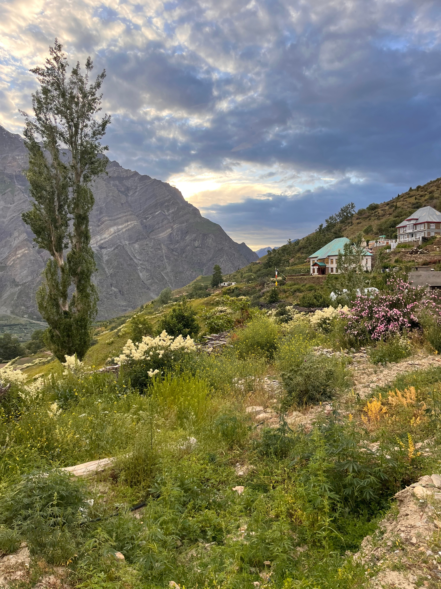
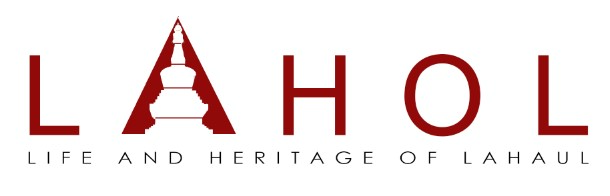
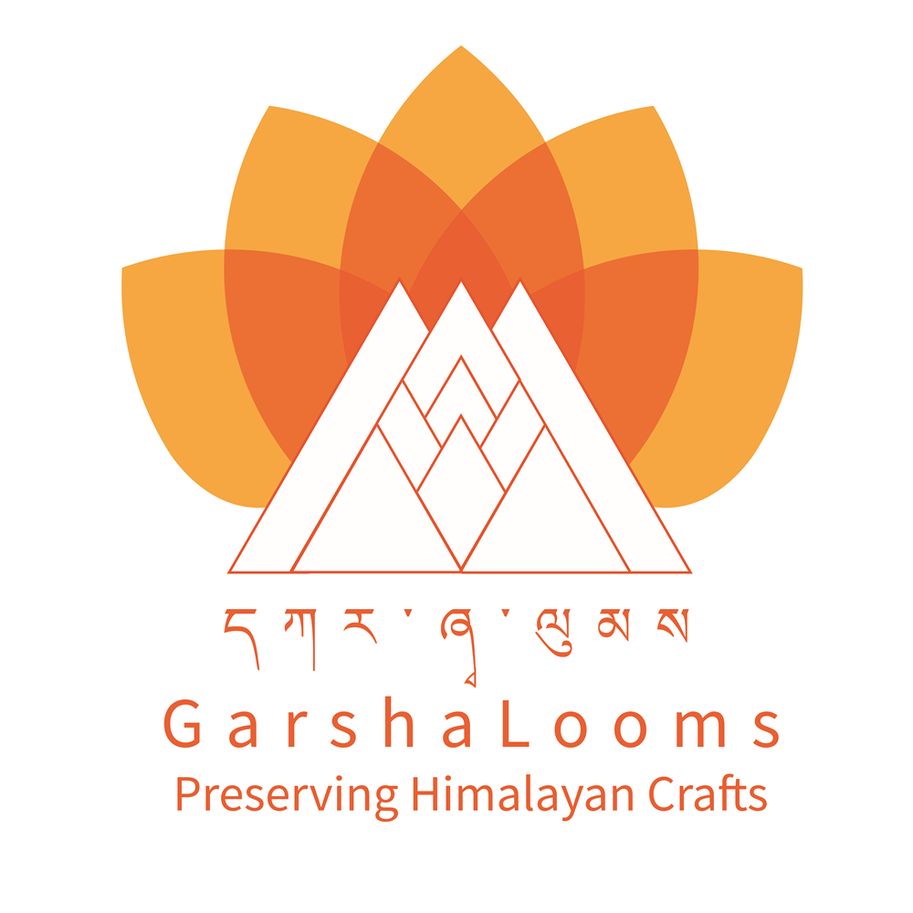

Beyond the day job
Side Quest
Work rooted in mountains, craft and community — where digital product thinking helps local stories travel further without losing where they came from.
Explore the workLahaul Valley
Some of the most meaningful product work begins far from a product room.
These initiatives bring together digital strategy, market access and cultural stewardship — helping community-led ideas grow while keeping the valley's people, knowledge and heritage at the centre.

Lahaul Valley · Himachal Pradesh
Community & culture
LAHOL
Product Manager | Digital Growth, Cultural Preservation & Community Development
I work with LAHOL on strengthening its digital presence and creating sustainable pathways for its cultural and community-led initiatives in the Lahaul Valley.
My work includes digital storytelling, social media strategy, brand development, audience and partner outreach, and identifying opportunities across government schemes, grants, handicraft, handloom, and Ministry of Textiles programmes.
I have also contributed to craft preservation workshops, helping document, promote, and create awareness around traditional Lahauli crafts and encouraging their continued practice among local communities.
The larger goal is to help LAHOL take the stories, crafts, and knowledge of the valley beyond its geographical boundaries while keeping the community and its heritage at the centre.

Lahaul Valley · Himachal Pradesh
Craft & livelihoods
GarshaLooms
Product Manager | Digital Strategy, Brand Growth & Market Access
Helping Garsha Looms, a community-led craft initiative from Lahaul Valley, build its digital presence and create new pathways for growth.
I work across digital brand discovery, social media strategy, e-commerce onboarding, lead generation, and institutional partnerships. I also support grant discovery across the handicraft, handloom, and Ministry of Textiles ecosystem to strengthen artisan livelihoods and preserve Lahaul's indigenous craft traditions.
The goal is to help a deeply local craft reach wider markets while staying rooted in its people, place, and heritage.

Off the clock
Always taking the scenic route.
Away from roadmaps and release plans, Deepti is happiest somewhere between a mountain road, a quiet valley and a sky that refuses to look ordinary.
Her Instagram is a personal trail of Lahaul, Spiti, changing seasons, unhurried moments and the small details that give a place its feeling. It is less about checking destinations off a list and more about staying curious, getting a little lost and carrying the mountain vibe home.
Follow the journey@the_bong_one_ ↗